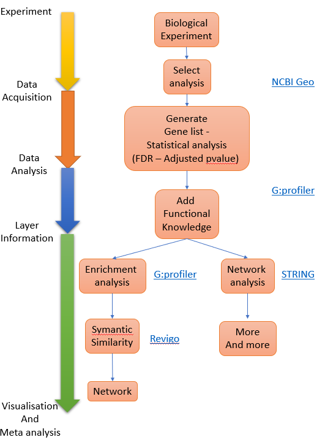
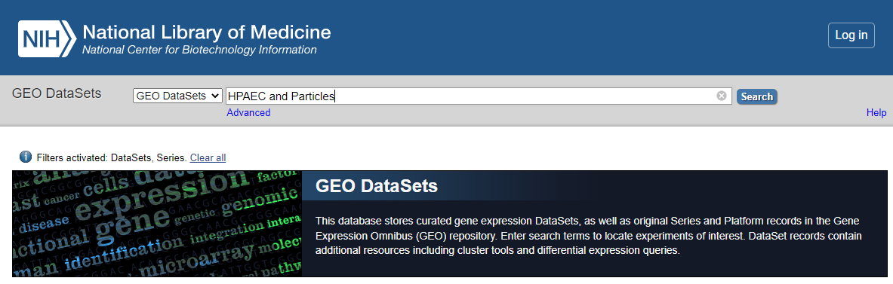
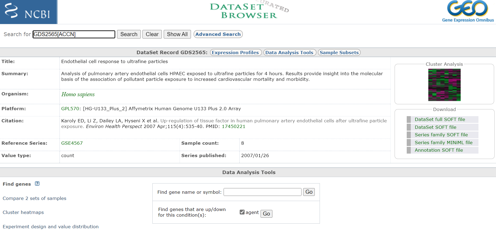
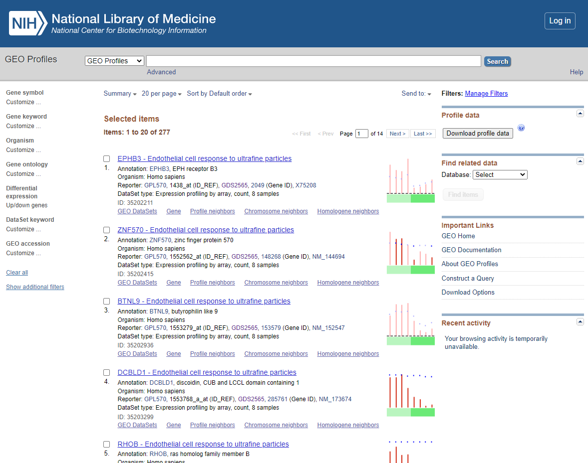
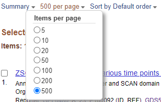
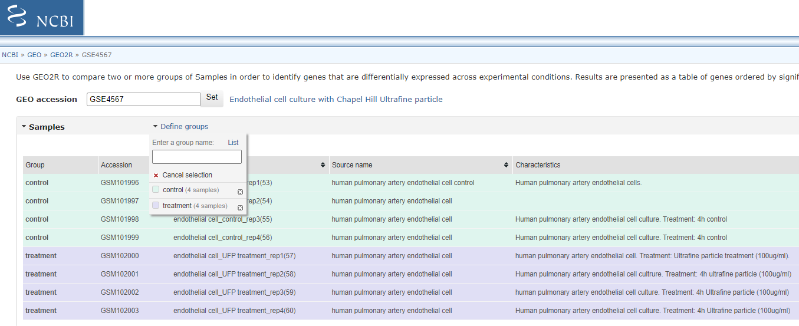
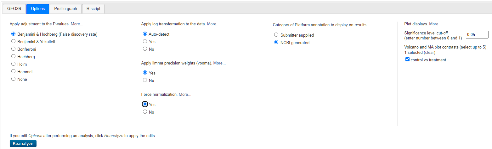
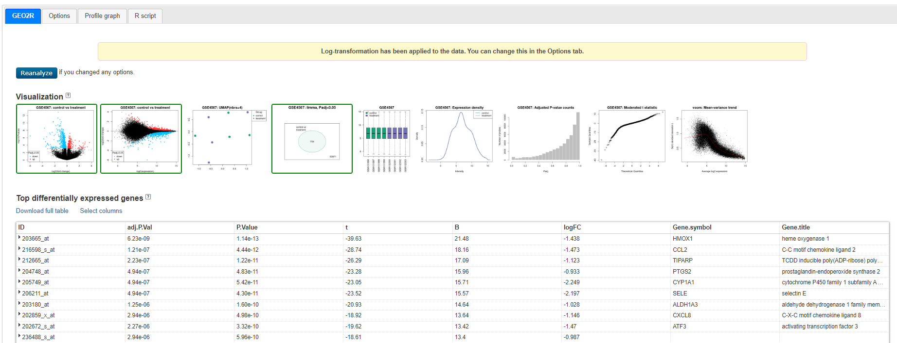

Workshop Overview
Processing RNAseq Data
Converting RNASeq data into gene counts is the first-step prior to analysis of the biological function and networks revealed through the subsequent transcription analysis. This process is outside the scope of this workshop but if you are interested Andres et al 2013 Provides an excellent overview of the processes involved.
 Figure 1. Process overview
Dataset to use - Geo:GDS2565
Panopto_walk_through
Key Statistical Concepts
The workshop will use tools that exploit statistical approaches to identify differential expressed genes (DEGs) and subsequently identify the biological pathways or processes that are over represented (some time refereed to as enriched) within the DEGs. You will not need to derive the mathematical formula underpinning these concepts or deploy the algorithums from first principles since the software you will use does this for you but it is worth knowing the background. There is an excellent academic from Stanford University Name Prof Josh Starmer who runs a youtube channel called StatQuest this deal with a large range of biological stats and has some great annotations to explain them, I am going to suggest you watch two of his videos to orientate you about the key statistical concepts for this session:
False Discover Rate
Fisher’s Exact Test and Enrichment Analysis
Mining GEO database
Geo Workshop
- Search for you dataset
Go to Geo DataSets: (https://www.ncbi.nlm.nih.gov/gds/)[https://www.ncbi.nlm.nih.gov/gds/]
 GEO_DataSet Search
now select
- Refine search to only show ‘DataSets’ and ‘Series’
Select < DataSets and Series > from the left hand menu.
 Refine to DataSets
Refine to DataSets
3A. Select procesed dataset (should be number 3 in list and have a heat map icon to the right)
Click on title < Endothelial cell response to ultrafine particles > to select DataSet
 Entry Page
Take notes off all pertinent information about the experiment, including species and what microarray platform was used. In this case experiment was conducted on rats and analysed on an Affymetrix Human Genome U133 Plus 2.0 Array. Download any publication available. Also, if you are interested you could have a look at the cluster analysis on the right hand site. This will show you how the relationship of the expression profiles from each sample relative to each other. If the experiment was successful, all samples of a certain treatment should cluster together.
4A. Compare experiment samples
Click <Compare 2 sets of sample>
Choose <test e.g. One-tailed t-test (A > B)>
Choose
Click on: Step 2: Select which Samples to put in Group A and Group B
 Select Groups to compare
Select Groups to compare
Choose < Query Group A vs B >
You should now see a list of the following DEGS
 DEG List
5A. Download DEGs
You have >100 DEGs but the page only displays the first 20. Before downloading DEGS change the items per page from 20 to 500.
 Items Per Page
Select < Download profile data >
and you will be prompted to save the profiling of the DEGs displayed as default file name <profile_data.txt>
Save to appropriate location. If needed Select Page 2…. of the DEGS and repeat the download process.
Repeat this process for <test e.g. One-tailed t-test (B > A) significance level 0.001 >_
6A. Open and Merge DEG lists in Excel
The DEG lists show the gene list with there relative expression level (normalised) and annotation for the genes involved (annotation shown in columns BG ->). For Our next steps we will use the Gene symbol that is in Column BH.
3B. Select un-processed series (should be number 2 - it will have icon < Analyze with GEO2R > at the end of the entry)
Click on < Analyze with GEO2R >
Now Define groups by click clicking the < Define Group pull > down and create groups ‘control’ and ‘Treatment’ (enter group name and press enter). Click on each sample in list and associated it with one of your group (you can hold ctrl down to select multiple entry before associating them with the group).
 Select Groups to compare
4B. Customise the Option and Analyse
Select < Options > and customise as shown below:
 Geo2R Options
Select < reanalyze >
Will will now see a Processing icon - this may take a minute or two.
5B. DEGs
You will now see a table and a series of Visualisations - review the visualisation taking note of what each are showing you.
 Geo2R results
Venn diagram showing GSE4567: Limma, Padj<0.05 - 704 genes - this is the set we will use
Click on < Explore and download, control vs treatment and Download Significant genes >
This will give you a Tsv you can open in excel
6B DEG TSV
Open the DEG TSV - you will have ID (Affymetrix), Gene Symbol, Description and Log2(fold Change) and Adjusted p-value. The Gene.symbol can have multiple symonyms for each gene - this can bias future analsyis. Copy/paste gene symbol column to rught hand column (so no other data is on right), and use < Data > Text to Columns > Delimited > Other > ‘/’ > Finish >_ to push secondary symbols into other columns.